ETH-USDT-SWAP:1722945600000:short:strict_shallow_pullback_v2_balanced
score=65.0; attempt=1; extension=1.8641386411033802; signal_to_level=1.4071101978584306; flags=confirmation_chase_risk, pre_pullback_extension_late
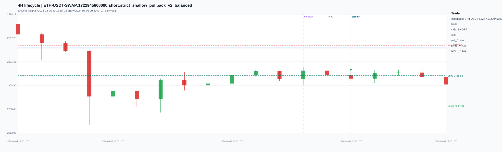
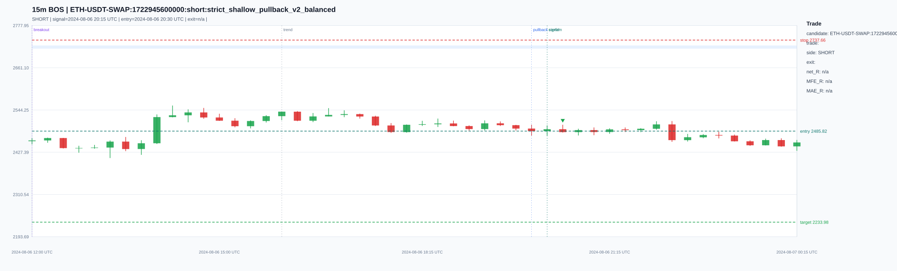
BTC-USDT-SWAP:1724126400000:long:strict_shallow_pullback_v2_balanced
score=75.0; attempt=1; extension=1.7387317342647384; signal_to_level=0.8459560553139884; flags=pre_pullback_extension_late, pullback_too_deep
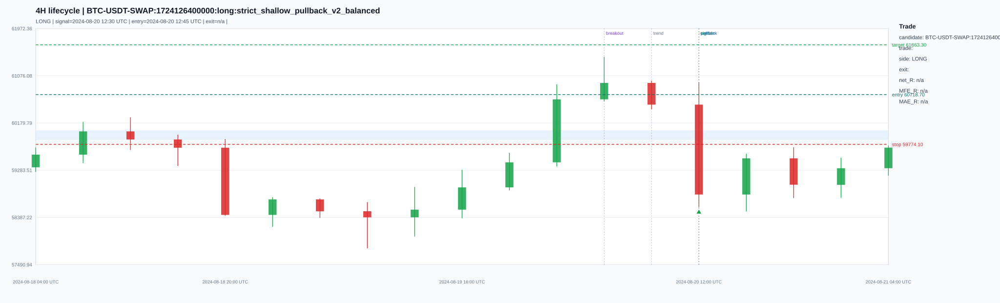
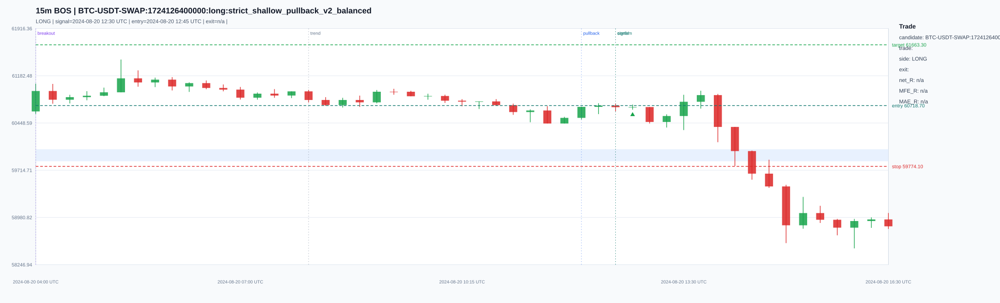
ETH-USDT-SWAP:1720195200000:long:strict_shallow_pullback_v2_balanced
score=85.0; attempt=1; extension=0.655395777511192; signal_to_level=0.7606922065700736; flags=pullback_too_deep
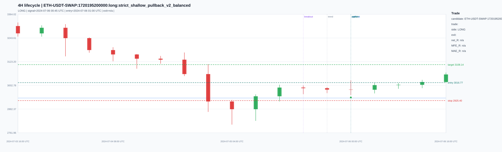
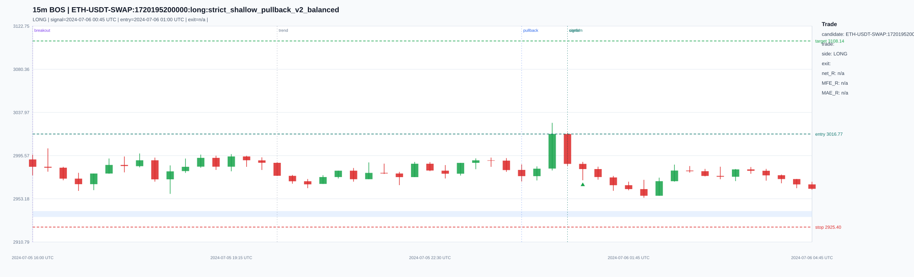
BTC-USDT-SWAP:1721606400000:long:strict_shallow_pullback_v2_balanced
score=70.0; attempt=1; extension=2.3887166590725917; signal_to_level=1.029616031684841; flags=pre_pullback_extension_late, pullback_too_deep
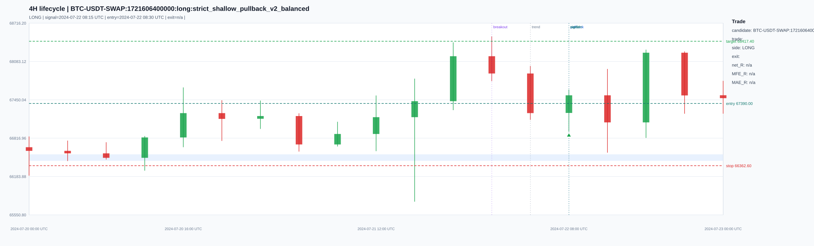
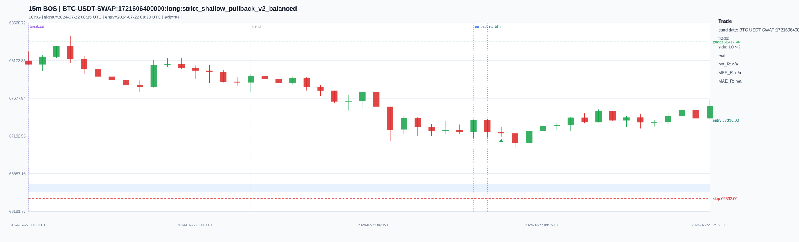
BTC-USDT-SWAP:1729800000000:long:strict_shallow_pullback_v2_balanced
score=70.0; attempt=1; extension=2.1708815117373574; signal_to_level=0.9017129490026254; flags=pre_pullback_extension_late
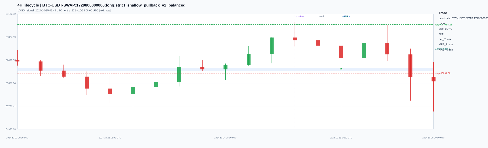
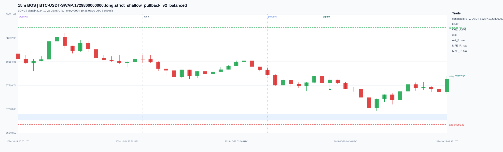
BTC-USDT-SWAP:1726876800000:long:strict_shallow_pullback_v2_balanced
score=90.0; attempt=1; extension=1.2454759227640577; signal_to_level=1.0607565346548404; flags=none
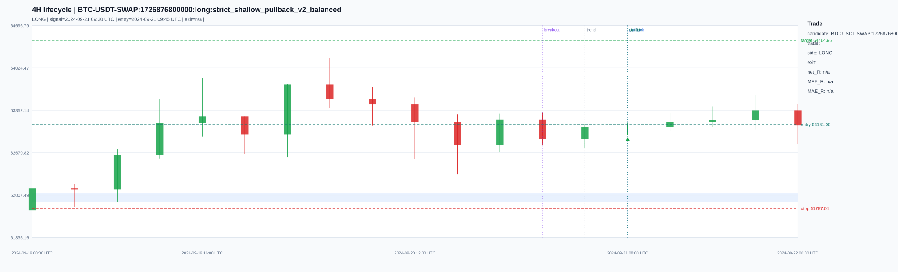
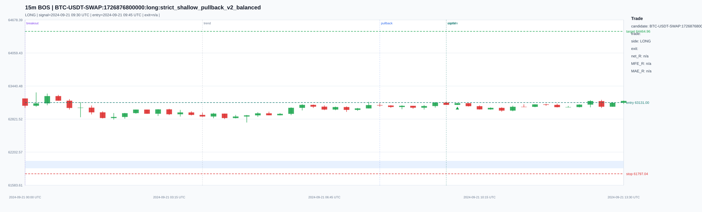
ETH-USDT-SWAP:1730160000000:long:strict_shallow_pullback_v2_balanced
score=65.0; attempt=1; extension=1.908034837068205; signal_to_level=1.6167734611997218; flags=confirmation_chase_risk, pre_pullback_extension_late
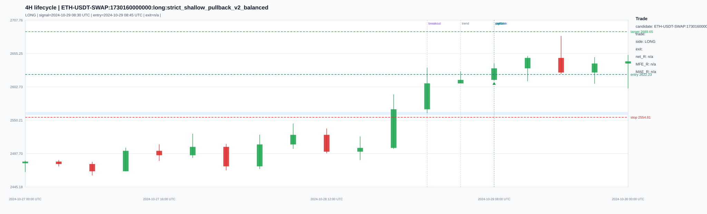
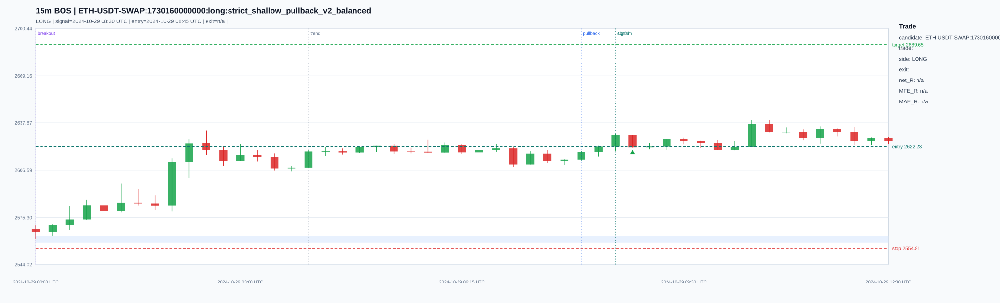
BTC-USDT-SWAP:1728360000000:long:strict_shallow_pullback_v2_balanced
score=85.0; attempt=1; extension=1.165352725476414; signal_to_level=1.1774553987042349; flags=pullback_too_deep
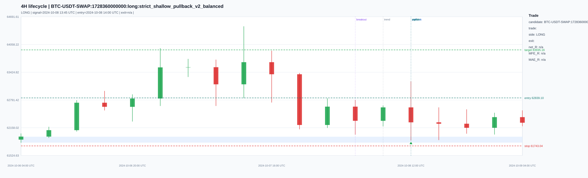
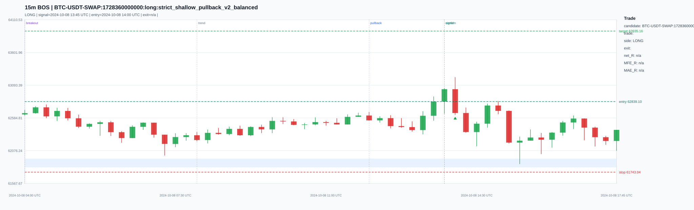
BTC-USDT-SWAP:1721880000000:short:strict_shallow_pullback_v2_balanced
score=70.0; attempt=1; extension=1.6349686752644683; signal_to_level=1.4430148040553539; flags=confirmation_chase_risk, pre_pullback_extension_late
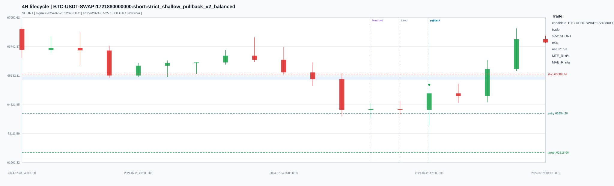
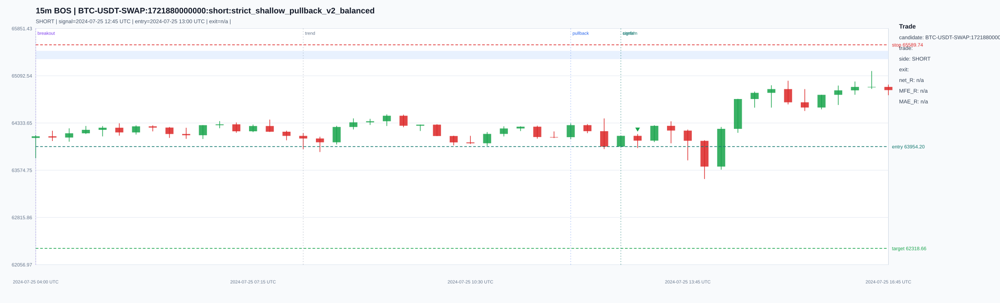
BTC-USDT-SWAP:1721131200000:long:strict_shallow_pullback_v2_balanced
score=60.0; attempt=2; extension=1.5179871959675582; signal_to_level=1.77135759471628; flags=confirmation_chase_risk, pre_pullback_extension_late, pullback_too_deep, second_pullback_attempt
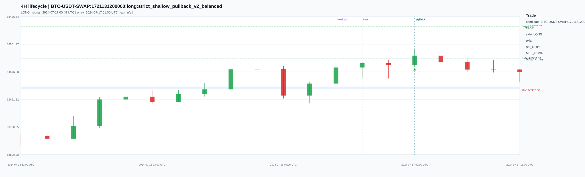
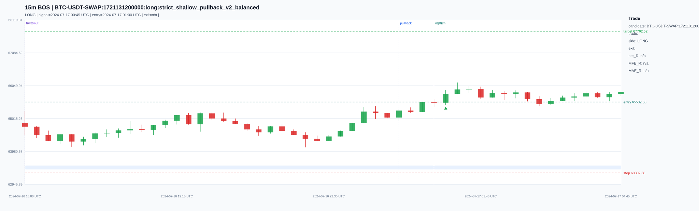
BTC-USDT-SWAP:1729022400000:long:strict_shallow_pullback_v2_balanced
score=95.0; attempt=1; extension=0.771449057564949; signal_to_level=0.5875341314314771; flags=pullback_too_deep
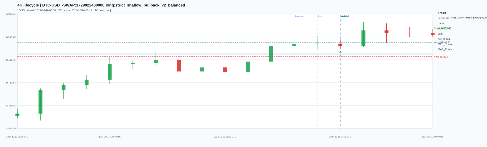
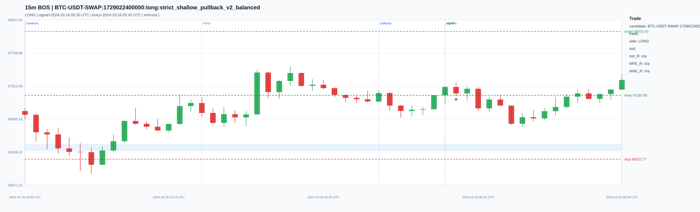
ETH-USDT-SWAP:1726948800000:long:strict_shallow_pullback_v2_balanced
score=80.0; attempt=1; extension=1.672113766527613; signal_to_level=1.0841197058615653; flags=pre_pullback_extension_late
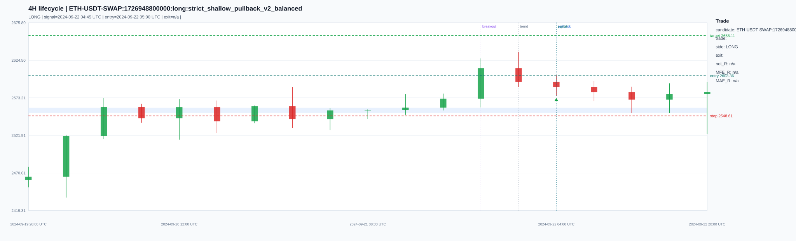
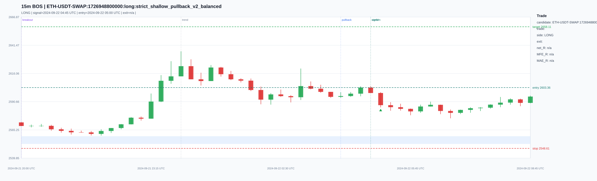
ETH-USDT-SWAP:1732824000000:long:strict_shallow_pullback_v2_balanced
score=85.0; attempt=1; extension=0.9504401975896892; signal_to_level=0.8621554442264627; flags=pullback_too_deep
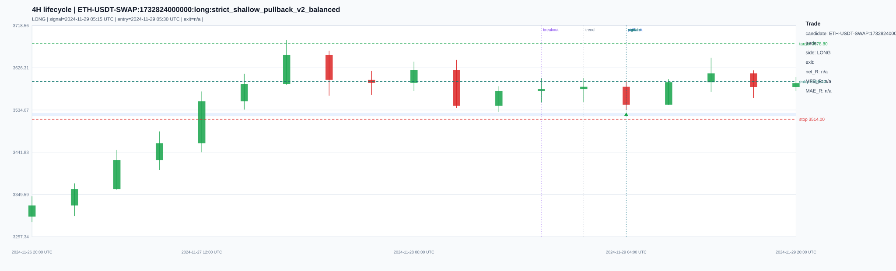
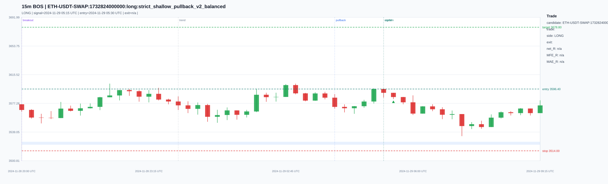
ETH-USDT-SWAP:1725163200000:short:strict_shallow_pullback_v2_balanced
score=75.0; attempt=1; extension=1.3585062605257459; signal_to_level=1.1473325034780835; flags=pre_pullback_extension_late, pullback_too_deep
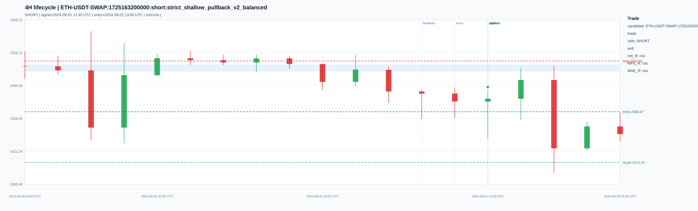
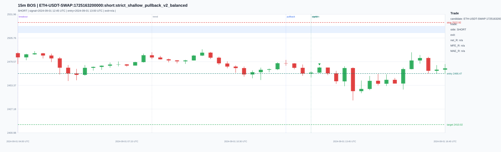
BTC-USDT-SWAP:1729411200000:long:strict_shallow_pullback_v2_balanced
score=75.0; attempt=2; extension=1.0206354639687525; signal_to_level=0.7943583939490035; flags=pullback_too_deep, second_pullback_attempt
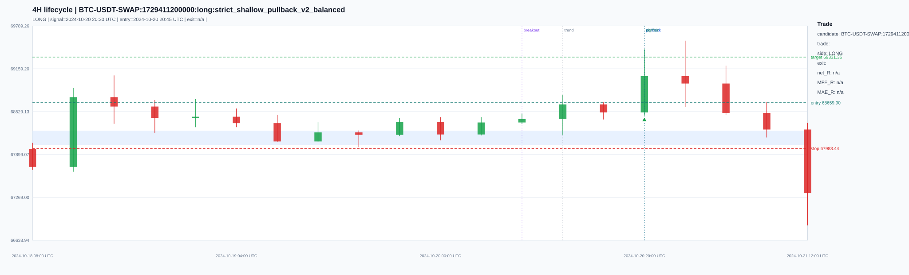
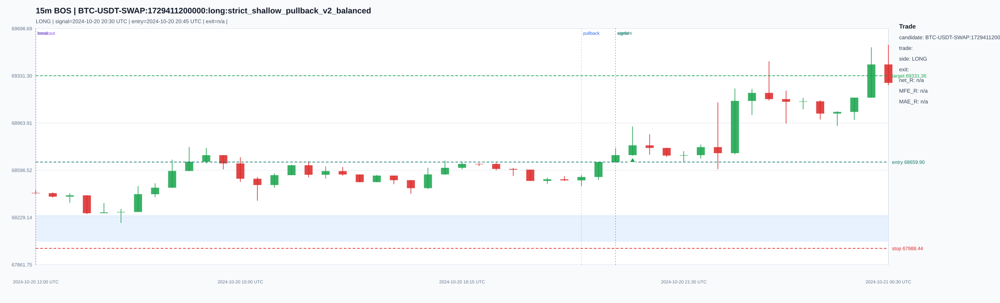
ETH-USDT-SWAP:1728172800000:long:strict_shallow_pullback_v2_balanced
score=100.0; attempt=1; extension=0.6793402753511779; signal_to_level=0.6672732778903758; flags=none
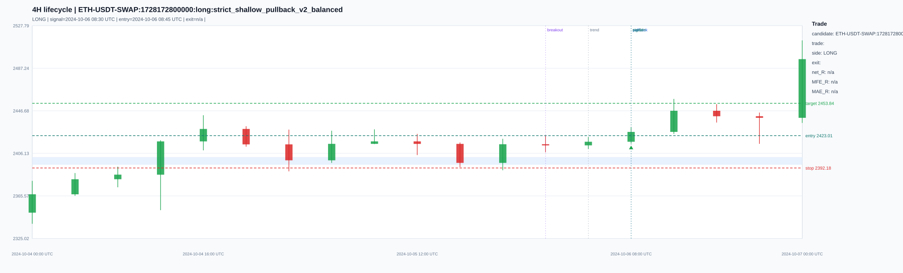
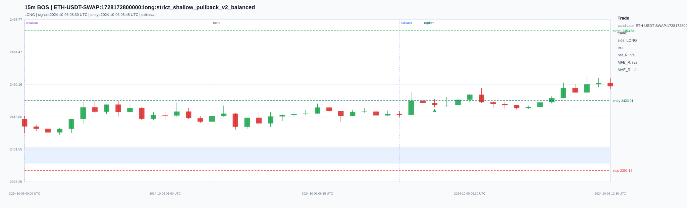
ETH-USDT-SWAP:1724198400000:short:strict_shallow_pullback_v2_balanced
score=75.0; attempt=1; extension=1.4309821313609563; signal_to_level=0.7792417631153457; flags=pre_pullback_extension_late, pullback_too_deep
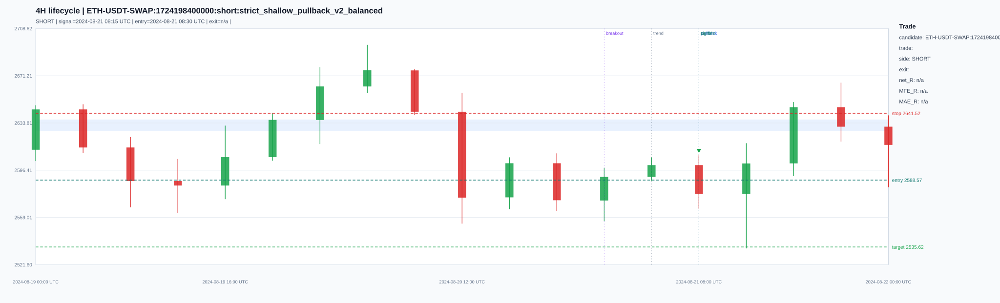
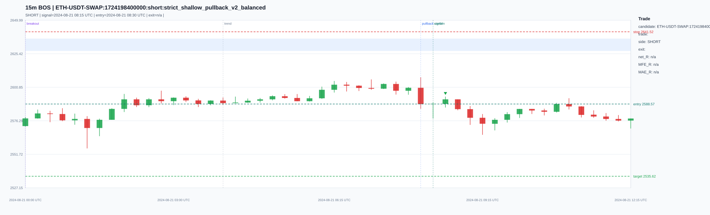
ETH-USDT-SWAP:1721016000000:long:strict_shallow_pullback_v2_balanced
score=75.0; attempt=1; extension=1.4882713370531058; signal_to_level=1.2170376110766645; flags=pre_pullback_extension_late, pullback_too_deep
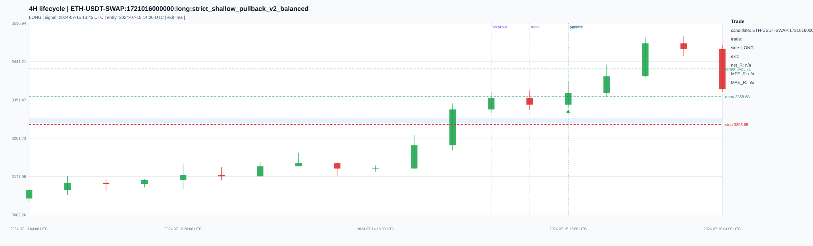
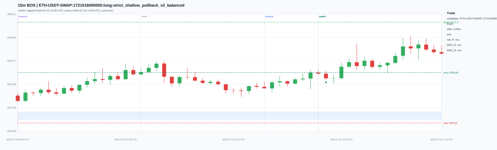
BTC-USDT-SWAP:1730995200000:long:strict_shallow_pullback_v2_balanced
score=70.0; attempt=1; extension=1.6993223642227646; signal_to_level=1.3842191407530073; flags=confirmation_chase_risk, pre_pullback_extension_late
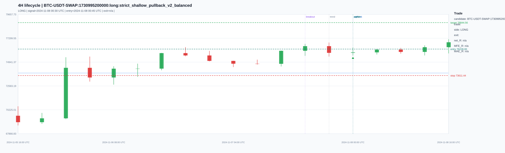
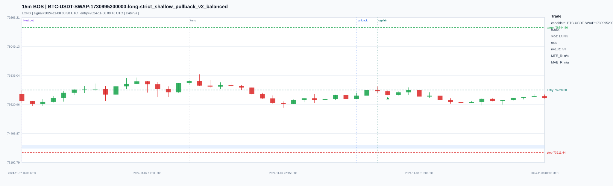
BTC-USDT-SWAP:1723276800000:long:strict_shallow_pullback_v2_balanced
score=65.0; attempt=1; extension=2.2116624402663128; signal_to_level=1.9741117992341943; flags=confirmation_chase_risk, pre_pullback_extension_late
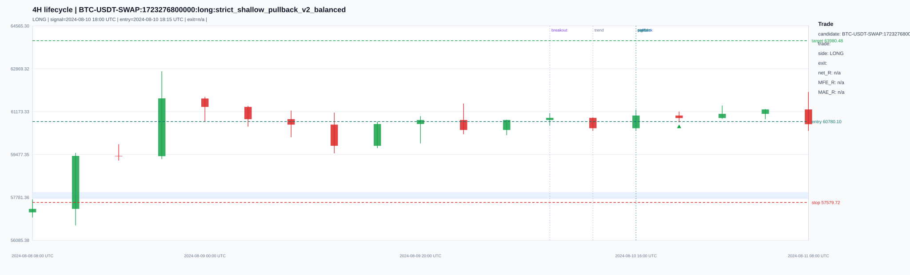
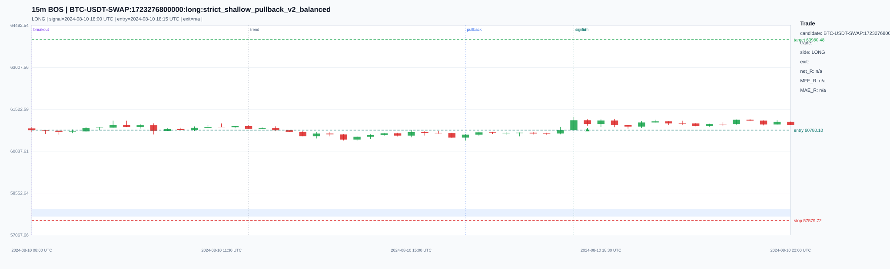